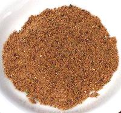

 |
Garam Masala - KashmirKashmir - India/Pakistan - Garam Masala | ||||
| Makes: Effort: Sched: DoAhead: |
5 T * 25 min Yes |
Kashmir has its own takes on Garam Masala, darker and more aromatic than the more familiar Punjab style, and no chili heat. As with other masalas, formulas vary by household. | |||
|
------ 1-1/2 1-1/2 1 1/4 1 ------ 2 1 1/2 2 1 1/4 |
--- T T T t t --- t t in t |
-- Dry Roast Black Cumin seeds (1) Fennel seeds Black Cardamom seeds (3) Green Cardamom seeds Fenugreek seeds ------------- Bay Leaves Cloves, whole Peppercorns black Cinnamon stick Blade Mace Nutmeg |
Make: - (25 min)
|